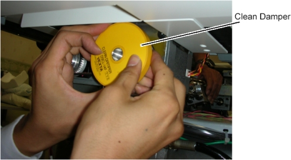

Operating Documentation
Direction 5307452-8EN, Rev# 4
Discovery CT750 HD Service Methods - Adv
Operating Documentation |
| Required Persons | Preliminary Reqs | Procedure | Finalization |
|---|---|---|---|
| 1 |
| Last Revised: | 26 June 2008 |
| Item | Qty | Effectivity | Part# | Manufacturer | |
|---|---|---|---|---|---|
| Spring Balance | 1 | - | 5184128 (included in IMS Bearing Block Replacement Kit) | - | |
Disengage the bearing blocks from the IMS base by unscrewing 2 screws, refer to IMS Bearing Block Replacement.
Move the IMS bearing away from the Gantry by rotating the IMS shaft.
Illustration 1: Bearing Block Disengagement

Remove a screw holding the IMS driving cover (RR) to the Table.
Illustration 2: Screw Removal

Set eye-bolts to Table frame and the bearing block.
Illustration 3: Support Screw Setting

Set the spring balance to the eye-bolts.
Illustration 4: Spring Balance Attachment

Make sure of the bearing block tension as follows:
| Hold the clean damper FIRMLY to avoid injury due to reverse rotation of the clean damper by a tension of the spring balance. |
Hold and rotate the clean_damper by hand.
Keep the IMS shaft rotating in manner of above step to move the bearing block in the IN direction.
The bearing block movement will automatically stop at some position of the IMS shaft depending on how much of the bearing tension, read the peak value of the spring balance at this position.
Illustration 5: Clean Damper Rotating

| NOTE: | One way of reading the peak value of the spring balance.
|
Verify that this value is 52 kg ± 2 kg.
If the value is out of specification, adjust the bearing tension by turning two set screws on the bearing block evenly (10kg/turn).
Illustration 7: Two Set Screws of Bearing Block

Remove two eye-bolts from the bearing block and the Table frame.
Engage the bearing block to the IMS base, refer to IMS Bearing Block Replacement.
Power up the Table from the service Switch Panel.
Move the cradle and IMS in and out completely 10 cycles and verify that table movement is operating normally.
Turn off all 3 switches (Axial Drive, HVDC, 120VAC), and re-install the Table covers.